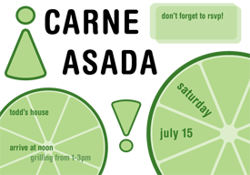

Invitations
Commencement
When I realized I was finally graduating, I decided to make some invitations. At first, I had hoped to get them letterpressed and use the fixed type size as some kind of challenge for myself, but the more and more I thought about it, I realized that I was way out of my element.
The commencement design sprang from something I witnessed when I met up with my friend Sloan at Small Design, although common, it was gigantic word filled with other words repeated at smaller type sizes, kind of like the Acme 2001 signs I had made in high school. I decided to zoom in and accentuate the words by making them larger than the canvas and focusing on even smaller text within them. The feeling is somewhat overwhelming, but the idea is clear, like commencement.
On May 24th, 2006 the graphic (sans name) appeared as the spotlight for MIT's homepage. I received several comments complimenting the typography and one that criticized the appearance of the word men three times on the graphic.
Carne Asada!
My sister's fiance is having a barbecue on the 15th of July and she asked me if i could design an invitation either suitable for printing or simply emailing. After cutting limes for several weeks at my job, i readily believed that the single most defining culinary trait of any carne asada was the presence (and use) of those tiny limes.
This invitation celebrates those little limes (and reuses their wedges for exclamation marks) and also marks my third use of the Helvetica Rounded Bold family. It is a little more vacant than i would like it to be, but it's just as playful as i would want it to be. Perhaps a failing in the design is the inability to maintain the 'writing within the wedge' motif which makes the contrast between both limes feel ad-hoc and chaotic.
Visual Identity
Chickenfeed
During the Summer of 2005, I did some undergraduate research at MIT's Computer Science and Artificial Intelligence Laboratory. While at the User Interface Design Group headed up by Rob Miller, I worked on Chickenfoot, a tool for automating web actions. When the project had become large enough, changelog entries began appearing on a blog and the design for the masthead was done by me.
Note the use (oh no!) of Helvetica Rounded Bold Condensed! The masthead feels balanced, although the bits of feed feel awkwardly placed. I love the color scheme, it reminds me of san diego. Specifically, like a toned down mid-80s San Diego Padres theme. I'll say it here: brown is due for a comeback!
Logo
This is the second logo/identity package I have had the privilege of working on. Initially, having been exposed to perhaps too much of the media lab, I worked through a series of designs that were all too perspective oriented. The first design involved (predictably) a number of neutral colored planes floating in space, intersecting to make a T E F. The second was a red-yellow-blue colored three dimensional T E F where the surface of each letter was colored but the vacant space was left nonexistent.
There was even an attempt to make the letters T E F appear within a perspective ocean, which visually accelerated towards a sun rising, or setting, i don't remember which. It made a nice sketch, but a terrible logo.
Working with Kate Ricke, she finally encouraged me to think simple and generic; less complicated, more focused. The result was (predictably) something round, colored in a shade of bio-tech/haute cuisine blue. I used Helvetica Rounded Bold family for the first time, thinking it both approachable but equally authoritative. The three splines that intersect near the F are meant to represent dose-response curves, but are supposed to be a nice element in and of themselves. In February of 2006, the design was chosen, among others in a contest, as the foundation's logo.
How To Get Around MIT
The first project that i was able to fully control the aesthetic of, was the HowToGAMIT's. In the summer of 2005, I was the design editor for the book and i contributed heavily to the book's completely redesigned layout, aesthetic, and its cover. Although i had made some actual HowToGAMIT icons and graphics, they never made it past some email reviews.
Many people will note with some degree of spite and scorn that this is the first cover in about 18 years that does not feature the image of a hack. They can all cry me a river.
I have tried to describe the cover to many people and the best i can come up with is this: Imagine that the book was designed by several sleep-adled folks, and now imagine that one of them sat down with a straight-edge and some graph paper and laid out the cover the way they used to do, pasting up pieces of printed type near each other, and then they tried taking a photo of the cover to send to the printer but some of the things on the cover started coming undone and they got a little off and some coverd others and stuff like that.
That is, it feels like it was made many years ago, but is too clean to have actually been made many years ago. The cover shows off my fascination with one of the few fonts i legitimately own, Linotype Futura. The cover is done almost exclusively in Futura Bold. The cover also features the 'classic mit logo' that was in use up until 2002. The nice part is that it seems to fit well with the Futura Bold and has a gritty feel, as if we stamped it on each book and poster.
The book, an excerpt of which appears on this page, was set in Legacy Sans. Almost every page has a margin/sidebar which contains useful information like hours of operation, T stops, and websites. The subheads were set in Futura Bold. Until it gets updated, the HowToGAMIT website shows what the previous edition's layout looked like, for comparison.
Business Cards
During July of 2005 i started to get antsy about what i was doing. Mainly, i realized that i had no calling card or business card. I was stuck in the middle of an identity crisis!
Out of this panic emerged two business cards.
MarcozOjeda
People criticize lots of other folks' designs. None however, appears to be as universally despised as the Verizon logo. I am no design guru, but i love cheeky designs and find this one amusingly subversive.
People have told me that they hate this card, but i argue that they have no sense of humor.
No Parking
This is a design i have always wanted to make, at least, just a little. It is perhaps the best example of my obsession with generic items.
The card is printed on vellum. I did my best with prototypes and used 80# laser printer vellum from the Paper Source. What's that you say? My weak 80# vellum is no match for your 85# card stock?
Because i chose vellum for my card, i printed the majority of the 'sign' on the back of the card and only printed my name and contact information on the front of the card. the effect is that the majority of the card looks 'dull' but that the name looks shiny and new. Take that, opaque people!
Menus
I visited a restaurant in Central Square last year, sometime in December or so, maybe even later, closer to spring. Who knows anymore. I was taken with their attention to decorating the plate, in presenting an aesthetic feast as well as a culinary treat. And the food, well, the food, it was ok. It wasn't amazing, but it was savory and i enjoyed it. The Boston Globe reviewed the restaurant in July 2005, almost in August, and said it was like "dining at an apartment someone just moved into," which i would say is a good description of the restaurant.
I took their take-out menu with me as i left and studied it when i got home. It was designed on a piece of legal-sized marigold paper as a quad-fold style leaflet set exclusively in Times New Roman.
From a user interface perspective, the menu made close to no sense. I decided to take a stab at redesigning it. Starting by reading the whole menu, i finally got to work.
My menu is set almost entirely in Adobe Caslon Pro, a gorgeous font with beautiful ligatures and old-style figures designed by William Caslon in the 1700s and redesigned digitally by Carol Twombley. I used Trajan Pro as the title font and used one of Zapfino's many fantastic swashes for decoration. The menu is clean, simple, and elegant. I feel that it matches the essence of Pepper Sky's.
But what about money? I never got paid for this because i was never hired by them. I did this job entirely pro-bono as a hobby and as a test for myself. I went by a month after i finished it, sometime in May of this year, to present the menu to one of the managers. I tried to explain i didn't really want any money for it and that they were welcome to use it. My friend Reid told me that this was my mehta, which is supposed to be something that you do out of the goodness of your own heart without expecting payment. Admittedly, i was disappointed that they never contacted me about using the menu. Oh well.
Download the pdf if you'd like to see the whole design
Posters
I will be the first to admit that other people make better posters than i do. Usually. This is one instance where i think i really outdid myself. In contrast to the usually generic, nondescript, two minutes in inDesign posters that i often churn out, i spent time designing this one. On paper.
The poster was made for technique as a means for recruiting digital photographers. It is also my homage to Jan Tschichold, whose Die Neue Typographie has theoretically been my current gospel (despite my inability to find it anywhere, shhh). The poster is formatted for an A4 page, not a standard 8.5x11" page because it has slightly sexier proportions.
This poster's design is supposed to feel haphazard yet bizzarely organized. I consciously created distinction between type size, color and placement to actually impose meaning on an otherwise meaningless document.
The font used is Roadgeek, a free version of the US Highway signage font, a slightly less abrasive version of DIN, for those who need comparison. I love Roadgeek because it is so tastily generic but also because the author put a lot of work into it, and i appreciate that too. It is also the same font i used for my street sign business card. I believe this poster uses the 2W/2B weights.
Download the pdf of this poster if you'd like to read the nonsense text, or appreciate it closer to its actual size.
misc
I hate yearbook covers. For the most part, they are too pretentious. Sure, it's a yearbook, you only get about four of them in college, they're supposed to be meaningful, they're supposed to be about your school, &c. blah blah blah.
I designed the cover for the 2005 Technique as intentionally non-yearbook as i could get. I expected that most people would put the book away on a bookshelf, maybe in a box, somewhere. Maybe they'd look at it once, probably never look at it again. Who knows. I wanted the surly graduate to pick up the book one day and say from looking at the spine, this right here was MIT. Maybe a lofty goal.
The cover is designed after one of my favorite books, Cotton Puffs, Q-Tips, Smoke and Mirrors, a Whitney Museum coffee table book that went along with the exhibit of the same name. What you can't really appreciate from the image to the left, is the cover material. It's a gray cloth with white foil stamped lettering. The process is slightly delicate, unfortunately, and is not particularly resistant to wear.
The cover font is Futura Medium Oblique. It appears bold (and indeed, looks like apple's Futura Bold) because i added a 2 point stroke to the letters. I was hoping to preserve the N in Technique that pierces the baseline and the height of the ascender so tastefully. Unfortunately, Linotype's Futura does not have the happy fi ligature that features so nondescriptly in apple's rendering. Finally, the word Technique was placed close to the edge to instill some kind of tension and also because i was (secretly) hoping the E might actually get lopped off along the way.